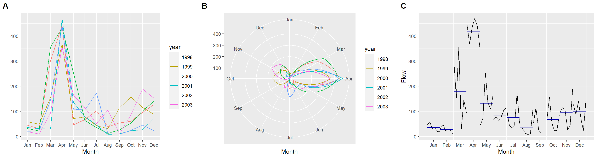
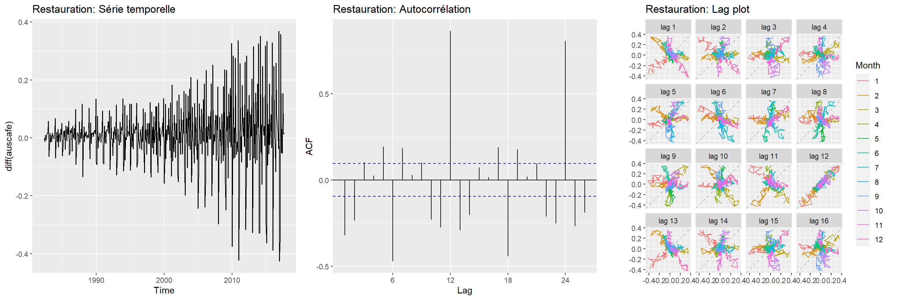
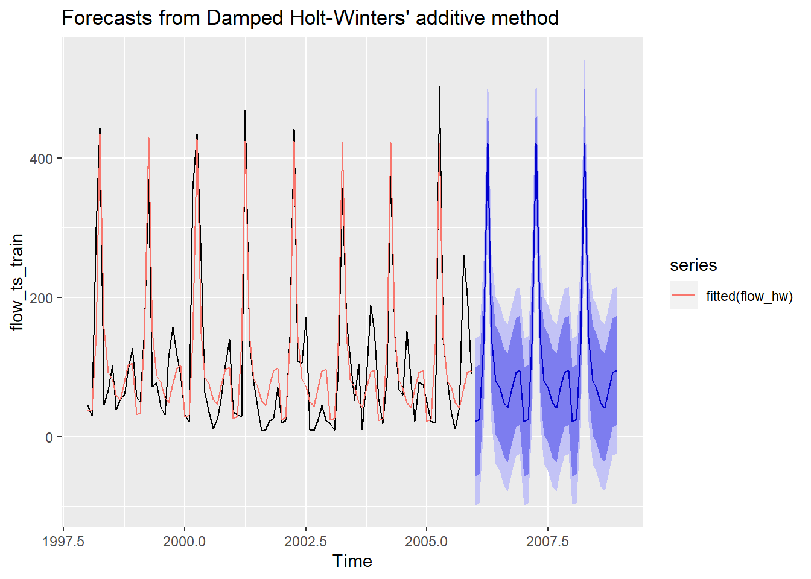
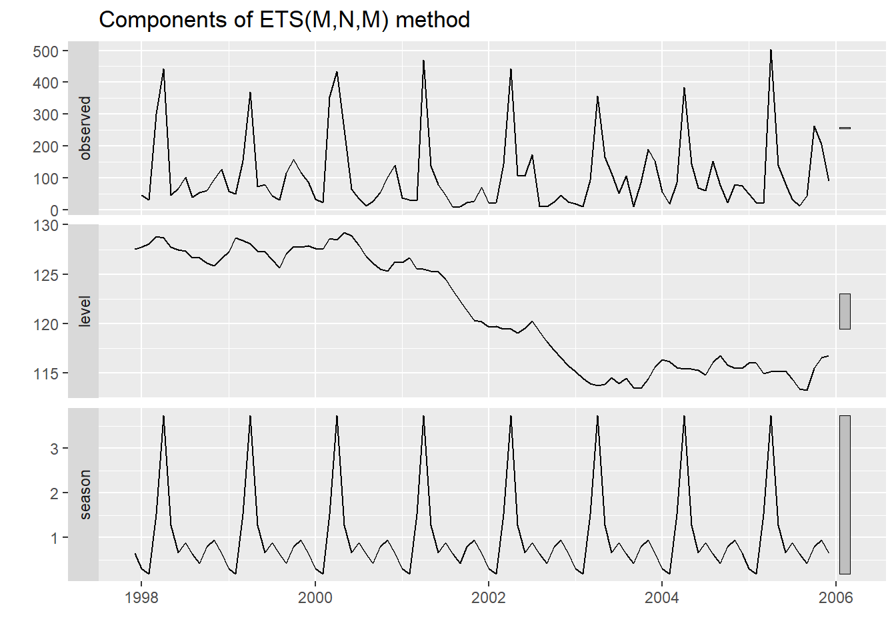

12 Les séries temporelles
️ Objectifs spécifiques:
À la fin de ce chapitre, vous
- saurez comment importer et manipuler des données temporelles (utiliser le format de date, filtrer, effectuer des sommaires, agréger des données, etc.)
- effectuer une régression sur une série temporelle
Les séries temporelles (ou chronologiques) sont des données associées à des indices temporels de tout ordre de grandeur: seconde, minute, heure, jour, mois, année, etc. En analyse de série temporelle, le temps est une variable explicative (ou dépendante) incontournable. L’émergence de cycles est une particularité des séries temporelles. Ceux-ci peuvent être analysés en vue d’en déterminer la tendance. Les séries temporelles peuvent également être modélisés en vue d’effectuer des prévisions.

Source: Scène de Back to the future, Robert Zemeckis et and Bob Gale, 1985
Nous allons couvrir les concepts de base en analyse et modélisation de séries temporelles. Mais avant cela, voyons comment les données temporelles sont manipulées en R.
Cette section est basée sur le livre Forecasting: Principles and Practice, de Rob J. Hyndman et George Athanasopoulos, qui peut être entièrement consulté gratuitement en ligne, ainsi que le cours associé sur la plateforme d’apprentissage DataCamp.
.](images/09_fpp2_cover.jpg)
12.1 Opérations sur les données temporelles
Le débit de la rivière Chaudière, dont l’exutoire se situe près de Québec, sur la rive Sud du fleuve Saint-Laurent, est mesuré depuis 1915.
## -- Attaching packages --------------------------------------- tidyverse 1.3.0 --## v ggplot2 3.3.0 v purrr 0.3.4
## v tibble 3.0.0 v dplyr 0.8.5
## v tidyr 1.0.3 v stringr 1.4.0
## v readr 1.3.1 v forcats 0.5.0## -- Conflicts ------------------------------------------ tidyverse_conflicts() --
## x dplyr::filter() masks stats::filter()
## x dplyr::lag() masks stats::lag()## Parsed with column specification:
## cols(
## Station = col_double(),
## Date = col_date(format = ""),
## Débit = col_double(),
## Remarque = col_character()
## )La fonction read_csv() détecte automatiquement que la colonne Date est une date.
## Rows: 34,700
## Columns: 4
## $ Station <dbl> 23402, 23402, 23402, 23402, 23402, 23402, 23402, 23402, 23...
## $ Date <date> 1915-02-27, 1915-02-28, 1915-03-01, 1915-03-02, 1915-03-0...
## $ Débit <dbl> 538.0, 377.0, 269.0, 345.0, 269.0, 334.0, 269.0, 269.0, 26...
## $ Remarque <chr> "MC", "MC", "MC", "MC", "MC", "MC", "MC", "MC", "MC", "MC"...Le débit de la rivière Chaudière peut être exploré graphiquement.

On observe des données sont manquantes de la fin des années 1920 à la fin des années 1930. Autrement, il est difficile de visualiser la structure du débit en fonction du temps, notamment si le débit suit des cycles réguliers. On pourra isoler les données depuis 2014.
hydro %>%
filter(Date >= as.Date("2014-01-01")) %>%
ggplot(aes(x = Date, y = `Débit`)) +
geom_line()
R comprend la fonction as.Date(), où l’argument format décrit la manière avec laquelle la date est exprimée.
## [1] "1999-03-29"L’argument x peut aussi bien être une chaîne de caractères qu’un vecteur où l’on retrouve plusieurs chaînes de caractères exprimant un format de date commun. La fonction as.Date() permet ainsi de transformer des caractères en date si read_csv() ne le détecte pas automatiquement. Ce format peut prendre la forme désirée, dont les paramètres sont listés sur la page d’aide de la fonction strptime(). Toutefois, le plus petit incrément de temps accepté par as.Date() est le jour: as.Date() exclut les heures, minutes et secondes. Le module lubridate, issu du tidyverse, permet quant à lui de manipuler avec plus de grâce les formats de date standards, incluant les dates et les heures: lubridate sera préféré dans ce chapitre.
##
## Attaching package: 'lubridate'## The following objects are masked from 'package:dplyr':
##
## intersect, setdiff, union## The following objects are masked from 'package:base':
##
## date, intersect, setdiff, union## [1] "2011-02-19 09:14:00 UTC"Plusieurs autres formats standards sont présentés sur un aide-ménoire de lubridate. Si vos données comprennent des formats de date non standard, vous pourrez utiliser la fonction as.POSIXlt(), mais il pourrait être préférable de standardiser les dates a priori.
.](images/09_lubridate-cheatsheet-thumbs.png)
Figure 12.2: Aide-mémoire du module lubridate.
Le module lubridate rend possible l’extraction de la date (date()), l’année (year()), le mois (month()), le jour de la semaine (wday()), le jour julien (yday()), etc. pour plus d’options, voir [l’aide-mémoire de lubridate])(https://rawgit.com/rstudio/cheatsheets/master/lubridate.pdf).
## [1] "2019-03-14"## [1] 3## [1] 73## [1] 5## [1] "1552554840S"Ces extractions peuvent être utilisées dans des suites d’opération (pipelines). Par exemple, si nous désirons obtenir le débit mensuel moyen de la rivière Chaudière depuis 1990, nous pouvons créer une nouvelle colonne Year et une autre Month avec la fonction mutate(), effectuer un filtre sur l’année, regrouper par mois pour obtenir le sommaire en terme de moyenne, puis lancer le graphique.
hydro_month <- hydro %>%
mutate(Year = Date %>% year(),
Month = Date %>% month()) %>%
filter(Year >= 1990) %>%
group_by(Month) %>%
dplyr::summarise(MeanFlow = mean(`Débit`, na.rm = TRUE))
hydro_month %>%
ggplot(aes(x=Month, y=MeanFlow)) +
geom_line() +
scale_x_continuous(breaks = 1:12) +
expand_limits(y = 0)
On pourra aussi agréger par moyenne mensuelle en gardant l’année respective en créant une nouvelle colonne de date YearMonth qui permettra le regroupement avec group_by(), puis créer plusieurs facettes.
hydro %>%
mutate(Year = Date %>% year(),
Month = Date %>% month(),
YearMonth = ymd(paste0(Year, "-", Month, "-01"))) %>%
filter(Year >= 2010 & Year < 2018) %>%
group_by(Year, YearMonth) %>%
dplyr::summarise(`Débit` = mean(`Débit`, na.rm = TRUE)) %>%
ggplot(aes(x=YearMonth, y=`Débit`)) +
facet_wrap(~Year, scales = "free_x", ncol = 4) +
geom_line() +
expand_limits(y = 0)
Il est possible d’effectuer des opérations mathématiques sur des données temporelles. Par exemple, ajouter 10 jours à chaque date.
## # A tibble: 5 x 5
## Station Date Débit Remarque DateOffset
## <dbl> <date> <dbl> <chr> <date>
## 1 23402 1915-02-27 538 MC 1915-03-09
## 2 23402 1915-02-28 377 MC 1915-03-10
## 3 23402 1915-03-01 269 MC 1915-03-11
## 4 23402 1915-03-02 345 MC 1915-03-12
## 5 23402 1915-03-03 269 MC 1915-03-13Pour effectuer des opérations sur des incréments inférieurs aux jours, il faut s’assurer que le type des données temporelles soit bien POSIXct, et non pas Date.
## [1] "Date"## [1] "POSIXct" "POSIXt"## # A tibble: 5 x 5
## Station Date Débit Remarque DateOffset
## <dbl> <dttm> <dbl> <chr> <dttm>
## 1 23402 1915-02-27 00:00:00 538 MC 1915-02-27 00:00:10
## 2 23402 1915-02-28 00:00:00 377 MC 1915-02-28 00:00:10
## 3 23402 1915-03-01 00:00:00 269 MC 1915-03-01 00:00:10
## 4 23402 1915-03-02 00:00:00 345 MC 1915-03-02 00:00:10
## 5 23402 1915-03-03 00:00:00 269 MC 1915-03-03 00:00:1012.2 Analyse de séries temporelles
Tout comme c’est le cas de nombreux sujet couverts lors de ce cours, l’analyse et modélisation de séries temporelles est un domaine d’étude en soi. Nous allons nous restreindre ici aux séries temporelles consignées à fréquence régulière. Les exemples d’analyses et modélisation de séries temporelles sont typiquement des données économiques, bien que les principes qui les guident sont les mêmes qu’en d’autres domaines. Cette section est vouée à l’analyse, alors que la prochaine est vouée à la modélisation.
Par exemple, voici une série temporelle économique typique, qui exprime les dépenses mensuelles en restauration en Australie.
## Registered S3 method overwritten by 'quantmod':
## method from
## as.zoo.data.frame zoo## Loading required package: fma## Loading required package: expsmooth
On y détecte une tendance générale, probablement propulsée par la croissance de la démographie et des revenus, ainsi que des tendances cycliques. On verra plus loin comment prédire des occurrences futures, ainsi que l’incertitude de ces prédictions, à partir des données consignées.
Jusqu’à présent, nous avons travaillé avec des tableaux de données incluant une colonne en format date. Nous allons maintenant travailler avec des séries temporelles telles que représentées en R.
12.2.1 Créer et visualiser des séries temporelles
L’information consignée dans une série temporelle inclut nécessairement un indice temporel associé à au moins une variable. En R, cette information est consignée dans un objet de type ts, pour time series. Prenons une mesure quelconque prise à chaque trimestre de l’année 2018.
set.seed(96683)
date <- ymd(c("2018-01-01", "2018-04-01", "2018-07-01", "2018-10-01"))
mesure <- runif(length(date), 1, 10)
mesure_ts <- ts(mesure, start = date[1], frequency = 4)
mesure_ts## Qtr1 Qtr2 Qtr3 Qtr4
## 17532 7.175836 3.646285 6.631606 8.648371L’argument start est la date de la première observation et frequency est le nombre d’observations par unité temporelle, ici l’année.
J’ai auparavant recueilli des données météo avec weathercan (dispobibles seulement depuis 1998) et fusionné avec le tableau hydro. Pour accélérer la procédure, j’ai enregistré les données dans un fichier RData. De facto, ne gardons que les données disponibles entre 1998 et 2008, ainsi que les colonnes désignant la date, le débit, les précipitations totales et la température.
## Rows: 3,653
## Columns: 4
## $ Date <date> 1998-01-01, 1998-01-02, 1998-01-03, 1998-01-04, 1998-...
## $ Débit <dbl> 15.70, 16.00, 17.40, 19.30, 23.20, 29.00, 58.85, 65.80...
## $ total_precip <dbl> 1.6, 2.8, 2.2, 0.0, 5.8, 11.8, 2.4, 19.2, 11.6, 2.6, 0...
## $ mean_temp <dbl> -21.1, -8.9, 1.9, -3.2, -8.7, -8.0, -7.4, -6.3, -5.4, ...Pour créer une série temporelle de type ts, j’enlève la date, je démarre au premier événement de 1998, et chaque incrément a une fréquence de 1/365.25 unités depuis 1998 (il y a en moyenne 365.25 jours par an).
hydrometeo_ts <- ts(hydrometeo %>% dplyr::select(-Date),
start = c(hydrometeo$Date[1] %>% year(), 1),
frequency = 365.25)Le module ggplot2 comprend la fonction autoplot(), pratique pour visualiser les séries temporelles.

Il est possible de filtrer des séries temporelles en mode tidyverse. Toutefois, il est plus simple d’utiliser la fonction de base windows(). Disons, les 10 premiers jours de l’an 2000.
## Time Series:
## Start = 2000.00136892539
## End = 2000.02600958248
## Frequency = 365.25
## Débit total_precip mean_temp
## 2000.001 42.40 9.4 -5.6
## 2000.004 40.70 0.0 -5.5
## 2000.007 43.60 23.5 -0.9
## 2000.010 49.04 0.0 -8.8
## 2000.012 58.90 0.0 -12.9
## 2000.015 49.10 1.2 -4.6
## 2000.018 44.40 3.8 -10.5
## 2000.021 40.60 6.8 -4.9
## 2000.023 38.10 7.0 -2.3
## 2000.026 36.50 12.9 -0.3Voyons l’évolution des débits mensuelles.
hydrometeo_monthly <- hydrometeo %>%
mutate(Year = Date %>% year(),
Month = Date %>% month(),
YearMonth = ymd(paste0(Year, "-", Month, "-01"))) %>%
group_by(Year, YearMonth) %>%
dplyr::summarise(`Débit` = mean(`Débit`, na.rm = TRUE),
total_precip = sum(total_precip, na.rm = TRUE), # somme
mean_temp = mean(mean_temp, na.rm = TRUE)) # moyenne
hydrometeo_monthly_ts <- ts(hydrometeo_monthly %>% ungroup() %>% dplyr::select(`Débit`, total_precip, mean_temp), start = c(1998, 1), frequency = 12)Contraignons la période grâce à window(), puis visualisons les tendances cycliques avec forecast::ggseasonplot() et forecast::ggsubseriesplot(). Notez que j’utilise la fonction cowplot::plot_grid() pour arranger différents graphiques ggplot2 en une grille.
##
## ********************************************************## Note: As of version 1.0.0, cowplot does not change the## default ggplot2 theme anymore. To recover the previous## behavior, execute:
## theme_set(theme_cowplot())## ********************************************************##
## Attaching package: 'cowplot'## The following object is masked from 'package:lubridate':
##
## stampggA <- ggseasonplot(window(hydrometeo_monthly_ts[, 1], 1998, 2004-1/365.25)) + ggtitle("")
ggB <- ggseasonplot(window(hydrometeo_monthly_ts[, 1], 1998, 2004-1/365.25), polar = TRUE) + ggtitle("")
ggC <- ggsubseriesplot(window(hydrometeo_monthly_ts[, 1], 1998, 2004-1/365.25), polar = TRUE) + ggtitle("") + labs(y="Flow")
plot_grid(ggA, ggB, ggC, ncol = 3, labels = c("A", "B", "C"))
12.2.2 Structures dans les séries temporelles
Les séries temporelles sont susceptibles d’être caractérisées par des structures communément observées.
- La tendance est une structure décrivant la hausse ou la baisse à long terme d’une variable numérique.
- La fluctuation saisonnière est une structure périodique, qui oscille autour de la tendance générale de manière régulière selon le calendrier.
- La fluctuation cyclique est aussi une structure périodique, mais irrégulière (par exemple, les oscillations peuvent durer parfois 2 ans, parfois 3). Les fluctuations cycliques sont souvent de plus longue fréquence que les fluctuations saisonnières, et leur irrégularité rend les prédictions plus difficiles.
Note. Une tendance détectée sur une période de temps trop courte peut s’avérer être une fluctuation.
La figure ?? montre différentes structures. La figure ??A montre une tendance croissante des dépenses mensuelles en restauration en Australie, ainsi que des fluctuations saisonnières. La figure ??B montre des fluctuations saisonnières des températures quotidiennes moyennes à l’Université Laval, sans présenter de tendance claire. La figure ??C montre des fluctuations cycliques du nombre de lynx trappés par année au Canada de 1821 à 1934, sans non plus présenter de tendance claire. Les cycles sont conséquents des mécanismes de dynamique des populations (plus de proie entraîne plus de prédateur, plus de prédateur entraîne moins de proie, moins de proie entraîne moins de prédateur, moins de prédateur entraîne plus de proie, etc.), que nous couvrirons au chapitre 14.
data("lynx")
plot_grid(autoplot(auscafe),
autoplot(hydrometeo_ts[, 3]) + labs(y="Mean temperature"),
autoplot(lynx),
ncol = 3,
labels = c("A", "B", "C"))
Figure 12.3: Identification des tendances et fluctuations dans des séries temporelles
Il est possible que l’on retrouve une hiérarchie dans les fluctuations, c’est-à-dire que de grandes fluctuations (saisonnières ou cycliques) peuvent contenir des fluctuations sur des incréments de temps plus petits.
12.2.3 L’autocorrélation
Lorsque les données présentes des fluctuations (saisonnières ou cycliques), le graphique d’autocorrélation montrera un sommet aux étapes des cycles ou des saisons. Le graphique d’autocorrélation de données aléatoires (aussi appelées bruit blanc) montera des sommets sans signification.
Un graphique de retardement (lag plot) met successivement en relation \(y_t\) avec \(y_{t-p}\). Un graphique d’autocorrélation est la corrélation entre \(y_t\), \(y_{t-1}\), \(y_{t-2}\), etc. Une graphique de retardement donne un aperçu de la dépendance d’une variable selon ses valeurs passées. Les graphiques de retardement de données ayant une forte tendance présenteront des points près de la diagonale, tandis que ceux montrant des données fluctuantes de type sinusoïdal présenteront des points disposés de manière circulaire. Des données aléatoires, quant à elles, ne présenteront pas de structure de retardement facilement identifiable.
set.seed(64301)
bruit_blanc <- ts(runif(114, 0, 6000), start = c(1821, 1), frequency = 1)
plot_grid(autoplot(lynx) + ggtitle("Lynx: Série temporelle"),
ggAcf(lynx) + ggtitle("Lynx: Autocorrélation"),
gglagplot(lynx) + ggtitle("Lynx: Lag plot"),
autoplot(bruit_blanc) + ggtitle("Bruit blanc: Série temporelle"),
ggAcf(bruit_blanc) + ggtitle("Bruit blanc: Autocorrélation"),
gglagplot(bruit_blanc) + ggtitle("Bruit blanc: Lag plot"),
ncol = 3)
Exercice. Créez, puis interprétez des graphiques autoplot(), ggAcf() et gglagplot() pour les données auscafe.
Exercice. Trouvez le graphique d’autocorrélation et le graphique de retardement correspondant à chaque série temporelle.

Figure 12.4: Exercice: Trouvez le graphique d’autocorrélation et le graphique de retardement correspondant à chaque série temporelle.
Réponse, voir source("lib/09_exercice-hydrometeo.R"):
- Débit: A-B-C
- total_precip: B-A-A
- mean_temp: C-C-B
12.2.4 Signification statistique d’une série temporelle
J’ai précédemment introduit la notion de bruit blanc, qui est un signal ne contenant pas de structure, comme le grésillement d’une radio mal syntonisée. Nous avons vu au chapitre 6 que les tests d’hypothèse en statistiques fréquentielles visent entre autre à détecter la probabilité que les données soient générées par une distribution dont la tendance centrale est nulle. De même, pour les séries temporelles, il est possible de calculer la probabilité qu’un signal soit un bruit blanc. Deux outils peuvent nous aider à effectuer ce test: l’un visuel, l’autre sous forme de calcul.
Le graphique d’autocorrélation est à même d’inclure des seuils pour lesquels la corrélation est significative (lignes pointillées bleues).

L’analyse des seuils de signification de l’autocorrélation indique sur la possibilité de conduire la série temporelle vers un processus de modélisation prédictive. Dans l’exemple ci-dessus, on remarque qu’il existe des corrélations significatives pour un décalage de 4 à 6 données, mais que les données situées près les unes des autres pourraient être plus difficiles à modéliser.
Le test de Ljung-Box permet quant à lui de tester si la série temporelle entière peut être différenciée d’un bruit blanc.
##
## Box-Ljung test
##
## data: lynx
## X-squared = 365.54, df = 20, p-value < 2.2e-16La probabilité que la série soit un bruit blanc est presque nulle.
Notons que les tests statistiques sont aussi valides sur les dérivées des séries temporelles. En outre, une dérivée première de la série temporelle sur les dépenses devient une série temporelle de la variation des dépenses en restauration.
plot_grid(autoplot(diff(auscafe)) + ggtitle("Restauration: Série temporelle"),
ggAcf(diff(auscafe)) + ggtitle("Restauration: Autocorrélation"),
gglagplot(diff(auscafe)) + ggtitle("Restauration: Lag plot"),
ncol = 3)
##
## Box-Ljung test
##
## data: diff(auscafe)
## X-squared = 647.11, df = 16, p-value < 2.2e-16Jusqu’à présent, nous nous sommes contentés d’observer des séries temporelles. Lançons-nous maintenant dans un domaine plus excitant.

Source: Scène de Back to the future, Robert Zemeckis et and Bob Gale, 1985
12.3 Modélisation de séries temporelles
L’objectif général de la modélisation de série temporelle est la prévision (forecast). La majorité des modèles se base sur des simulations de futurs possibles, desquels on pourra déduire une tendance centrale (point forecast) ainsi que des intervalles prévisionnels pour apprécier l’incertitude de la projection. Il est important d’insister sur le fait que la tendance centrale ne signifie pas que les données futures suivront cette tendance, mais que, selon les données et le modèle, la moitié des données devrait se retrouver sous la ligne, et l’autre moitié au-dessus. De plus, la région de confiance définie par les intervalles prévisionnels signifient que par exemple 95% des points devraient se situer dans cette région.
Une manière d’évaluer la performance d’une prévision est de prévoir des données auparavant observées à partir des données qui les précèdent. Ces valeurs sont dites lissées. Tout comme c’est le cas en régression statistique, il est possible de déduire les résidus du modèle. Pour les régressions couvertes au chapitre 6, nous vérifions la validité du modèle en vérifiant si les résidus étaient distribuées normalement. Pour une série temporelle, on tend plutôt à vérifier si les résidus forment un bruit blanc, c’est-à-dire qu’ils ne sont pas corrélés. De plus, pour éviter d’être biaisées, leur moyenne doit être de 0. De manière complémentaire pour la validité des intervalles prévisionnels, mais non essentielle à la validité du modèle, les résidus devraient être distribués normalement et leur variance devrait être constante (Hyndman et Athanasopoulos, 2018).
Il est possible qu’un modèle remplisse toutes ces conditions, mais que sa prévision soit médiocre. Comme nous le verrons également au chapitre 11, une prédiction ou une prévision issue d’un modèle ne peut pas être évaluée sur des données qui ont servies à lisser le modèle. Pour vérifier une prévision temporelle, il faut séparer les données en deux séries: une série d’entraînement et une série de test (figure 12.5).
.](https://otexts.com/fpp2/fpp_files/figure-html/traintest-1.png)
Figure 12.5: Les points bleus désigne la série d’entraînement et les points rouges, la série de test. Source de l’image: Hyndman et Athanasopoulos, 1998.
La séparation dans le temps entre la série d’entraînement et la série de test se fait à votre convenance, selon la disponibilité des données. Vous aurez toutefois avantage à conserver davantage de données en entraînement (typiquement, 70%), et à tout le moins, séparer au moins une fluctuation saisonnière ou cyclique. La série d’entraînement servira à lisser le modèle pour en découvrir les possibles structures. La série de test servira à évaluer sa performance sur des données obtenues, mais inconnues du modèle pour vérifier les structures découvertes par le modèle. L’erreur prévisionnelle est la différence entre une donnée observée en test et sa prévision (l’équivalent des résidus, mais appliqués sur des données indépendantes du modèle). La performance d’une prévision peut être évaluée de différentes manières, mais l’erreur moyenne absolue échelonnée (mean absolute scaled error, MASE) est conseillée puisqu’elle ne dépend pas de la métrique de la quantité produite: plus la MASE se rapproche de zéro, meilleure est la prévision.
La prudence est de mise pour que les modèles de prédiction dans l’espace (chapitre (#chapitre-geo)) ou dans différentes circonstances (chapitre (#chapitre-ml)) ne soient pas extrapolées pas au-delà du nuage de points des données d’entraînement. Mais pour les modèles prévisionnels, nous ne connaissons pas le futur: on travaille nécessairement en extrapolation. C’est la raison pour laquelle la séparation entre l’entraînement et le test ne se fait pas au hasard comme pour les modèles d’autoapprentissage (chapitre (#chapitre-ml)). Puisque nous ne connaissons pas les données futures, la performance d’un modèle prévisionnel doit être évaluée pour sa capacité à extrapoler, et non pas à interpoler une année dont la mesure est inconnue entre un passé et un futur connus.
Plusieurs méthodes de prévision sont possibles. Nous en couvrirons 3 dans ce chapitre: la méthode naïve, la méthode SES et la méthode ARIMA. Nous allons couvrir les différents aspects de la modélisation des séries temporelles à travers l’utilisation de ces méthodes.
12.3.1 Méthode naïve
La méthode naïve définit la valeur suivante selon la valeur précédente (fonction forecast::naive()), ou la valeur de la saison précédente (fonction forecast::snaive()). Ces fonctions du module forecast incluent un composante aléatoire pour simuler des occurrences futures selon des marches aléatoires (random walks), où chaque valeur suivante est simulée aléatoirement, considérant la valeur précédente.
Nous tenterons de prévoir les débits de la rivière Chaudière. Ceux-ci étant caractérisé par des fluctuations saisonnières, mieux vaut utiliser snaive(). Mais auparavant, séparons la série en série d’entraînement et série de test.
flow_ts <- hydrometeo_monthly_ts[, 1]
flow_ts_train <- window(flow_ts, start = 1998, end = 2005.999)
flow_ts_test <- window(flow_ts, start = 2006)Lançons la modélisation sur les données d’entraînement.
hm_naive <- snaive(flow_ts_train, h = 24)
autoplot(hm_naive) +
autolayer(fitted(hm_naive)) +
autolayer(flow_ts_test, color = rgb(0, 0, 0, 0.6)) +
labs(x = "Année", y = "Débit")## Warning: Removed 12 row(s) containing missing values (geom_path).
Le graphique précédent montre que la prévision naïve (en rose) prend bien la valeur observée au cycle précédent (en noir). Les données de test sont en gris transparent. Notons que la présence de débit négatifs pourrait être évitée en utilisant une transformation logarithmique du débit préalablement à la modélisation.
Voyons maintenant l’analyse des résidus avec la fonction forecast::checkresiduals().

##
## Ljung-Box test
##
## data: Residuals from Seasonal naive method
## Q* = 34.903, df = 19, p-value = 0.01435
##
## Model df: 0. Total lags used: 19La p-value étant de 0.01546, il est peu probable que les résidus forment un bruit blanc. Les résidus contiennent de l’autocorrélation, ce qui devrait être évité. Ceci est toutefois dû à un seul point allant au-delà du seuil de 0.05, que l’on peut observer sur le graphique d’autocorrélation. Le graphique de la distribution des résidus montre des valeurs aberrantes, ainsi qu’une distribution plutôt pointue, qui donnerait un test de Kurtosis probablement élevé.
##
## Shapiro-Wilk normality test
##
## data: residuals(hm_naive)
## W = 0.93698, p-value = 0.0004733library("e1071")
kurtosis(residuals(hm_naive), na.rm = TRUE) # le résultat d'un test de kurtosis sur une distribution normale devrait être de 0.## [1] 2.909277Pas de panique, les prédictions peuvent néanmoins être valides: seulement, les intervalles prévisionnels pourraient être trop vagues ou trop restreintes: à prendre avec des pincettes.
L’évaluation du modèle peut être effectuée avec la fonction forecast::accuracy(), qui détecte automatiquement la série d’entraînement et la série de test si on lui fournit la série entière (ici l’objet flow_ts).
## ME RMSE MAE MPE MAPE MASE
## Training set 0.5952819 80.24256 54.53431 -57.045415 95.60936 1.000000
## Test set -1.0165543 75.18877 57.10499 -2.645333 59.10844 1.047139
## ACF1 Theil's U
## Training set 0.1669526053 NA
## Test set -0.0006850245 0.3877041La méthode naïve est rarement utilisée en pratique autrement que comme standard par rapport auquel la performance d’autres modèles est évaluée.
12.3.2 Méthode SES
Alors que la méthode naïve donne une crédibilité complète à la valeur précédente (ou au cycle précédent), la méthode SES (simple exponential smoothing) donne aux valeurs précédentes des poids exponentiellement décroissants selon leur ancienneté. La prévision par SES sera une moyenne pondérée des dernières observations, en donnant plus de poids sur les observations plus rapprochées.
Mathématiquement, la méthode SES est décrite ainsi.
\[\hat{y}_{t + h|t} = \alpha y_t + \alpha\left( 1-\alpha \right) y_{t-1} + \alpha\left( 1-\alpha \right)^2 y_{t-2} + ...\]
où \(\hat{y}_{t + h|t}\) est la prévision de \(y\) au temps \(t + h|t\), qui est le décalage de \(h\) à partir de la dernière mesure au temps \(t\). Le paramètre \(\alpha\) prend une valeur de 0 à 1, et décrit la distribution des poids. Une valeur de \(\alpha\) élevé donnera davantage de poids aux événements récents. La somme de tous poids \(\alpha\) tend vers 1 lorsque les pas de temps précédents tendent vers l’\(\infty\).

Une autre manière d’exprimer l’équation est de la segmenter en deux: une pour la prévision en fonction du niveau (level, le modèle), une autre pour décrire comment le niveau change au fil du temps.
| Description | Équation |
|---|---|
| Prévision | \(\hat{y}_{t + h|t} = l_t\) |
| Niveau | \(l_t = \alpha y_t + \alpha\left( 1-\alpha \right) l_{t-1}\) |
Exprimée ainsi, la prévision n’exprimera aucune tendance ni fluctuation. Il s’agira d’une projection jusqu’à l’infini de la moyenne des observations précédentes pondérée par leur décalage.
12.3.2.1 SES de base
Prenons les données de la NASA sur l’indice de température terre-océan, qui décrit un décalage par rapport à la moyenne des températures globales observées entre de 1951 à 1980. La méthode SES est appelée par la fonction forecast::ses(), de la même manière qu’on l’a fait précédemment avec la méthode naïve.
loti_ts <- read_csv("data/09_nasa.csv") %>% pull(LOTI) %>% ts(., start = 1880, frequency = 1)
#loti_ts <- window(loti_ts, start = 1950)
loti_ts_tr <- window(loti_ts, end = 2004)
loti_ses <- ses(loti_ts_tr, h = 20, alpha = 0.5)
autoplot(loti_ses) + autolayer(fitted(loti_ses))
Note. Les prévisions climatiques sont effectuées par des modèles bien plus complexes que ce que nous voyons ici. Les prévisions du GIEC agrègent des tendances localisées et incluent une batterie de covariables, dont la plus évidente est la concentration en CO2 dans l’atmosphère. Il s’agit seulement d’un exemple d’application.
12.3.2.2 SES avec tendance
La prévision a peu d’intérêt, étant donnée qu’elle n’inclut pas de tendance. Or, nous pouvons en ajouter une à l’équation. Ainsi exprimée, la tendance changera aussi au fil du temps.
| Description | Équation |
|---|---|
| Prévision | \(\hat{y}_{t + h|t} = l_t + \left( \phi + \phi^2 + ... + \phi^h \right) \times b_t\) |
| Niveau | $l_t = y_t + ( 1-) ( l_{t-1} + b_{t-1} ) $ |
| Tendance | \(b_t = \beta^* \left( l_t - l_{t-1} \right) + (1-\beta^*) \phi b_{t-1}\) |
Le paramètre \(\beta^*\) décrit la vitesse à laquelle la tendance peut changer, de 0 où la pente ne change pas à 1 où la pente change rapidement. Le paramètre \(\phi\) adouci la pente en s’éloignant de la dernière mesure. Un tendant vers 0 générera un fort adoucissement, alors qu’un tendant vers 1 ne générera pas d’adoucissement. Il peut être difficile de déterminer les paramètres de lissage \(\alpha\), \(\beta^*\) et \(\phi\), ainsi que les paramètres d’état \(l_0\) et \(b_0\). La fonction de forecast::holt() permet de les estimer automatiquement.
loti_holt_dF <- holt(loti_ts_tr, damped = FALSE, h = 100)
loti_holt_dT <- holt(loti_ts_tr, damped = TRUE, h = 100)
plot_grid(autoplot(loti_holt_dF), autoplot(loti_holt_dT))
## alpha beta l b
## 0.4052862918 0.0001000051 -0.2170967540 0.0052550677## alpha beta phi l b
## 0.4843654438 0.0001000061 0.8286096396 -0.1096315698 -0.0332523695Dans ce cas, l’optimisation de \(\phi\) lui donne une valeur de 0.8, une valeur suffisamment faible pour que l’adoucissement soit fort. Vous obtiendrez une valeur de \(\phi\) plus élevée en ne considérant que les données obtenues depuis 1950 (en décommentant loti_ts <- window(loti_ts, start = 1950), plus haut).
12.3.2.3 SES avec fluctuation saisonnière
D’autres paramètres peuvent être ajoutés pour de tenir compte des fluctuations saisonnières (les fluctuations cycliques sont plus difficiles à modéliser) de manière additive ou multiplicative. Voici la modification apportée pour la modélisation additive, en laissant tomber l’adoucissement.
| Description | Équation |
|---|---|
| Prévision | \(\hat{y}_{t + h|t} = l_t + h \times b_t + s_{t-m+h_m^+}\) |
| Niveau | \(l_t = \alpha \left(y_t - s_{t-m} \right) + \alpha\left( 1-\alpha \right) \left( l_{t-1} + b_{t-1} \right)\) |
| Tendance | \(b_t = \beta^* \left( l_t - l_{t-1} \right) + (1-\beta^*) b_{t-1}\) |
| Saison | \(s_t = \gamma \left( y_t - l_{t-1} - b_{t-1} \right) + (1-\gamma) s_{t-m}\) |
où \(m\) est la périodicité des fluctuations saisonnière, par exemple 4 pour quatre saisons annuelles et \(\gamma\) est un paramètre de la portion saisonnière, qui, tout comme un effet aléatoire en biostatistiques, fluctue autour de zéro. La variante multiplicative multiplie la prévision par un facteur plutôt que d’imposer un décalage. La mathématique n’est pas présentée ici pour plus de simplicité (consulter Hyndman et Athanasopoulos (2018), chapitre 7.3 pour plus de détails). Dans le cas multiplicatif, l’effet saisonnier fluctue autour de 1. Si l’amplitude de la fluctuation s’accroît au fil de la série temporelle, la méthode multiplicative donnera probablement de meilleurs résultats.
La fonction que nous utiliserons pour les SES-saisonniers est forecast::hw(). Les données de la NASA ne sont pas saisonnières (frequency(loti_ts) donne 1).
flow_hw <- hw(flow_ts_train, damped = TRUE, h = 12*3, seasonal = "additive")
autoplot(flow_hw) + autolayer(fitted(flow_hw))
12.3.2.4 Automatiser la prévision avec les SES
L’erreur du modèle peut aussi être calculée de sorte qu’elle soit constante ou augmente selon le niveau (ou décalage). Nous avons donc plusieurs types de modèles de la famille SES.
- Tendance: [sans tendance, tendance additive, tendance adoucie]
- Saison: [sans saison, saison additive, saison multiplicative]
- Erreur: [erreur additive, erreur multiplicative]
Lequel choisir? Encore une fois, on peut laisser R optimiser notre choix avec un modèle ETS (error, tend and seasonnal). L’optimisation est lancée avec la fonction forecast::ets().
## ETS(M,N,M)
##
## Call:
## ets(y = flow_ts_train)
##
## Smoothing parameters:
## alpha = 0.0104
## gamma = 1e-04
##
## Initial states:
## l = 127.508
## s = 0.6511 0.9399 0.7981 0.4272 0.6253 0.8872
## 0.6594 1.2741 3.7317 1.5211 0.1878 0.2971
##
## sigma: 0.6065
##
## AIC AICc BIC
## 1222.469 1228.469 1260.935Le modèle retenu est un ETS(M,N,M), définissant dans l’ordre le type d’erreur, de tendance et de saison selon A pour additif, M pour multiplicatif et N pour l’absence. Nous avons une erreur de type M (multiplicative), une tendance de type N (sans tendance) et une saison de type M (multiplicative). L’absence de valeur pour phi indique que l’adoucissement n’est probablement pas nécessaire.
Nous pouvons visualiser l’évolution des différentes composantes.

Dans un modèle sans tendance, avec saisonnalité multiplicative, les données levels sont multipliées par les données season pour obtenir la prévision. Malgré l’absence de tendance dans le modèle, il semble que le débit a diminué de 2000 à 2003 entre deux états stables de 1998 à 2000 et de 2003 à 2006.
La fonction forecast::ets() génère un modèle, mais pas de prédiction. Pour obtenir une prédiction, nous devons utiliser la fonction forecast::forecast(), que j’utiliserai ici en mode tidyverse.

L’analyse d’exactitude et celle des résidus sont toutes aussi pertinentes. La première est effectuée sur la prévision, et la seconde sur le modèle.
## ME RMSE MAE MPE MAPE MASE
## Training set -13.346098 59.33195 44.55719 -90.26010 110.68741 0.8170487
## Test set 3.768712 69.95479 55.55668 -24.65164 62.94846 1.0187472
## ACF1 Theil's U
## Training set 0.1612394 NA
## Test set 0.2452020 0.6990499
##
## Ljung-Box test
##
## data: Residuals from ETS(M,N,M)
## Q* = 27.068, df = 5, p-value = 5.533e-05
##
## Model df: 14. Total lags used: 19Il est peu probable que les résidus aient été générés par un bruit blanc, indiquant qu’il existe une structure dans les données qui n’a pas été capturée par le modèle.
Exercice. Modéliser la série temporelle lynx avec forecast::ets(). Que se passe-t-il?
12.3.2.5 Prétraitement des données
J’ai spécifié plus haut que les données de débit pourraient avantageusement être transformées avec un logarithme pour éviter les prédictions de débits négatifs. D’autres types de transformation peuvent être utilisées, comme la racine carrée ou cubique, l’opposée de l’inverse (\(-1/x\)) ou les transformations compositionnelles (chapitre 8). La transformation Box-Cox est aussi largement utilisée pour sa polyvalence.
\[ w = \begin{cases} ln(y_t) &\text{if } \lambda = 0 \\ \frac{y_t - 1}{\lambda} &\text{if } \lambda \neq 0 \end{cases} \]
\(\lambda = 1\): pas de transformation \(\lambda = 1/2\): ressemble à \(\sqrt{y_t}\) \(\lambda = 1/3\): ressemble à \(\sqrt[3]{y_t}\) \(\lambda = 0\): log naturel \(\lambda = -1\): ressemble à \(1/y_t\)
La fonction forecast::BoxCox.lambda() estime la valeur optimale de \(\lambda\).
## [1] 0.784101Cette valeur peut être imputée à l’argument lambda de la fonction forecast::ets(). Dans notre cas, nous désirions plutôt une transformation logarithmique. Conséquemment, nous utilisons lambda = 0.

Les erreurs ne franchissent pas le 0, mais sont vraisemblablement surestimées lors des sommets. Notez que R s’occupe de la transformation retour.
La différenciation est aussi une forme de prétraitement. La différenciation (fonction base::diff()) consiste en la soustraction de la valeur précédente à la valeur suivante. La valeur précédente peut être décalée à la valeur de la période de l’unité temporelle précédente, par exemple le mois de mars de l’année précédente. Un objectif de la différenciation est de rendre la série temporelle stationnaire en termes de tendance et de fluctuation saisonnière, de sorte que la série différenciée se comporte comme un bruit blanc.
plot_grid(flow_ts_train %>% autoplot() + ggtitle("Débit"),
loti_ts_tr %>% autoplot() + ggtitle("LOTI"),
flow_ts_train %>% diff(., lag = 12) %>% autoplot() + ggtitle("Débit avec différenciation saisonnière"),
loti_ts_tr %>% diff(., lag = 1) %>% autoplot() + ggtitle("LOTI avec différenciation d'ordre 1"))
12.3.3 La méthode ARIMA
Un modèle ARIMA, l’acronyme de l’anglais auto-regressive integrated moving average, est une combinaison de trois parties: AR-I-MA. L’autorégression consiste en une régression linéaire dont la variable réponse \(y_t\) est la variable à l’instant \(t\) et les variables explicatives sont les variables aux instants précédents. Pour un nombre \(p\) de périodes précédentes, nous obtenons une régression linéaire typique.
\[y_t = c + \phi_1 y_{t-1} + \phi_2 y_{t-2} + ... + \phi_p y_{t-p} + \epsilon_t\] où \(\epsilon_t\) est l’erreur sur la prédiction.
La partie concernant la moyenne mobile est une régression non pas sur les observations, mais sur les erreurs. Considérant les \(q\) erreurs précédentes, nous obtenons
\[y_t = c + \theta_1 \epsilon_{t-1} + \theta_2 \epsilon_{t-2} + ... + \theta_q \epsilon_{t-q} + \epsilon_t\]
La somme de l’autorégression et de la moyenne mobile donne un modèle ARMA. Le I de ARIMA, mis pour integrated, est le contraire de la différenciation, que j’ai présenté à la fin de la section sur les SES. Puisque la série temporelle doit être stationnaire pour effectuer l’ARMA, nous devons différencier la série un nom \(d\) de fois avant de procéder à l’autorégression et au calcul de la moyenne mobile.
Nous obtenons ainsi une ARIMA d’ordres \(p\), \(d\) et \(q\), notée \(ARIMA(p,d,q)\). Nous devons aussi statuer si \(c\) (l’intercept ou le drift) doit être ou non considéré come nul. Ces ordres peuvent être spécifiés dans la fonction telle que forecast::Arima(order = c(0, 1, 1), include.constant = TRUE). Toutefois, il est possible de les optimiser grâce à la fonction forecast::auto.arima(). Tout comme les sorties de forecast::ets(), forecast::auto.arima() fourni le modèle, mais pas les prédictions: la fonction forecast::forecast() doit être lancée pour obteir la prédiction.

## Series: .
## ARIMA(1,1,3) with drift
##
## Coefficients:
## ar1 ma1 ma2 ma3 drift
## -0.9405 0.6260 -0.6019 -0.3716 0.0060
## s.e. 0.0522 0.0976 0.0847 0.0846 0.0031
##
## sigma^2 estimated as 0.01036: log likelihood=109.53
## AIC=-207.06 AICc=-206.35 BIC=-190.14
##
## Training set error measures:
## ME RMSE MAE MPE MAPE MASE
## Training set -0.0007946749 0.09932376 0.0824145 22.62973 65.41129 0.8925238
## ACF1
## Training set -0.0221428Le sommaire du modèle spécifie une \(ARIMA(1,1,3)\) en utilisant l’intercept \(c\) (with drift).
Lorsque l’on compte prédire des séries saisonnières, nous devons ajouter un nouveau jeu d’ordres \((P,D,Q)m\), où \(P\), \(D\) et \(Q\) sont équivalents à leurs minuscules, mais portent sur des décalages saisonniers et non pas des décalages d’unités de temps. L’ordre \(m\) est le nombre de périodes à considérer par unité temporelle, par exemple 12 mois par an. Bonne nouvelle: forecast::auto.arima() automatise le tout. Nous pouvons utiliser lambda = 0 pour effectuer une transformation logarithmique.
flow_arima <- flow_ts_train %>% auto.arima(lambda = 0)
flow_arima %>% forecast(h = 36) %>% autoplot()
## Series: .
## ARIMA(1,0,0)(2,1,0)[12]
## Box Cox transformation: lambda= 0
##
## Coefficients:
## ar1 sar1 sar2
## 0.3029 -0.4913 -0.2687
## s.e. 0.1074 0.1196 0.1186
##
## sigma^2 estimated as 0.6561: log likelihood=-101.88
## AIC=211.77 AICc=212.27 BIC=221.49
##
## Training set error measures:
## ME RMSE MAE MPE MAPE MASE ACF1
## Training set 9.038871 71.47444 40.46425 -34.75027 64.84495 0.7419962 -0.182341Le sommaire du modèle, ARIMA(1,0,0)(2,1,0)[12] sous le format \(ARIMA(p,d,q)(P,D,Q)m\), retourne automatiquement une période de 12 mois avec une différenciation saisonnière mais sans différenciation ordinaire, excluant la moyenne mobile dans les deux cas.
Exercice. Il est toujours pertinent d’effectuer l’analyse des résidus…
12.3.4 Les modèles dynamiques
J’ai noté précédemment que l’évolution du climat tient compte d’une série de covariables explicatives. De même, le débit dans la rivière Chaudière n’est pas un effet de la saison, mais de son environnement (climat, changements dans la morphologie du paysage, utilisation de l’eau, etc.). La prévision du débit aura avantage à considérer ces covariables. L’ARIMA peut accueillir des covariables en modélisant le terme d’erreur, \(\epsilon_t\) en fonction de séries temporelles conjointes.
Le débit mensuel de la rivière Chaudière peut être modélisé en fonction de la température moyenne mensuelle et des précipitations totales mensuelles en ajoutant l’argument xreg à la fonction forecast::auto.arima(). L’argument consiste en la matrice temporelle des variables explicatives. Notez que forecast::auto.arima() ne fonctionne pas (encore?) avec l’interface-formule de R, mais que l’on peut se débrouiller en transformant en série temporelle la sortie de la fonction base::model.matrix(), qui elle peut accueillir une formule.
hm_tr <- window(hydrometeo_monthly_ts, end = c(2004, 12))
hm_te <- window(hydrometeo_monthly_ts, start = c(2005, 1))
flow_darima <- auto.arima(y = hm_tr[, "Débit"],
xreg = hm_tr[, c("total_precip", "mean_temp")],
lambda = 0)
summary(flow_darima)## Series: hm_tr[, "Débit"]
## Regression with ARIMA(1,0,0)(0,1,1)[12] errors
## Box Cox transformation: lambda= 0
##
## Coefficients:
## ar1 sma1 total_precip mean_temp
## 0.3213 -0.6236 0.0028 -0.0215
## s.e. 0.1148 0.1828 0.0017 0.0451
##
## sigma^2 estimated as 0.5392: log likelihood=-80.87
## AIC=171.74 AICc=172.65 BIC=183.12
##
## Training set error measures:
## ME RMSE MAE MPE MAPE MASE ACF1
## Training set 3.046006 64.76333 37.60995 -31.06861 57.3032 0.7149168 -0.3068227Note. Pour obtenir des résultats plus précis, mais dont les résultats seront plus longs à venir, spécifiez l’argument
stepwise = FALSEdans la fonctionforecast::auto.arima().
Les coefficients sur les covariables sont interprétables dans l’échelle de la prévision transformée. Ainsi, 1 mm de précipitation par mois augmentera le logarithme naturel du débit augmente de 0.0028. De même, 1 °C de température moyenne diminuera le logarithme naturel du débit augmente de 0.0215: notez que l’erreur standard sur ce coefficient étant très élevée, le coefficient n’est à première vue pas différent de 0. La température moyenne aurait avantage à être remplacée par un meilleur indicateur incluant les périodes d’accumulation de neige et de leur fonte. Pas mal doc?

Source: Scène de Back to the future, Robert Zemeckis et and Bob Gale, 1985
La prévision d’un modèle dynamique demandera les séries temporelles des covariables, qui peuvent elles-mêmes être modélisées ou être issues de simulations. Dans notre cas, nous pouvons utiliser la série de test.


##
## Ljung-Box test
##
## data: Residuals from Regression with ARIMA(1,0,0)(0,1,1)[12] errors
## Q* = 16.853, df = 13, p-value = 0.2061
##
## Model df: 4. Total lags used: 1712.3.5 Les modèles TBATS
Les modèles TBATS (Hyndman et Athanasopoulos, 2018) combinent tout ce que l’on a vu jusqu’à présent, à l’exception notable des covariables, dans une interface automatisée. L’automatisation a l’avantage d’une utilisation rapide, mais donne parfois des prédictions erronées.
lynx_tbats <- lynx %>% tbats()
lynx_tbats_f <- lynx_tbats %>% forecast()
lynx_tbats_f %>% autoplot()
##
## Forecast method: BATS(0.159, {5,1}, 0.833, -)
##
## Model Information:
## BATS(0.159, {5,1}, 0.833, -)
##
## Call: tbats(y = .)
##
## Parameters
## Lambda: 0.159431
## Alpha: 0.4096962
## Beta: 0.06308072
## Damping Parameter: 0.833291
## AR coefficients: 1.166918 -0.79967 0.178396 -0.165326 -0.174982
## MA coefficients: -0.391172
##
## Seed States:
## [,1]
## [1,] 15.0399753
## [2,] 0.4123534
## [3,] 0.0000000
## [4,] 0.0000000
## [5,] 0.0000000
## [6,] 0.0000000
## [7,] 0.0000000
## [8,] 0.0000000
## attr(,"lambda")
## [1] 0.1594313
##
## Sigma: 1.542751
## AIC: 1956.137
##
## Error measures:
## ME RMSE MAE MPE MAPE MASE ACF1
## Training set 52.88873 827.169 496.3222 -21.21278 50.42654 0.5973607 -0.04569254
##
## Forecasts:
## Point Forecast Lo 80 Hi 80 Lo 95 Hi 95
## 1935 3144.2286 1772.9365 5314.924 1279.84707 6900.473
## 1936 2272.7187 842.6749 5351.691 464.08249 8064.647
## 1937 1466.3925 410.3827 4224.271 185.16011 6932.120
## 1938 981.1883 227.2540 3210.040 88.86649 5547.989
## 1939 807.6476 170.9933 2800.598 62.30711 4954.037
## 1940 902.9068 196.5571 3075.407 73.22121 5401.634
## 1941 1286.8205 307.5223 4124.040 123.20099 7068.774
## 1942 1964.6976 520.9678 5872.628 225.83614 9784.659
## 1943 2722.5747 765.2794 7819.328 346.39977 12815.672
## 1944 3100.2748 837.7743 9148.331 368.32463 15162.079Le sommaire du modèle le type de modèle sélectionné ainsi que ses paramètres. Le titre du graphique en donne aussi un aperçu: BATS(0.159, {5,1}, 0.833, -):
- Le coefficient lambda utilisé est 0.159.
- Le {5, 1} signifie que p = 5 et et q = 1.
- L’adoucissement est de 0.833
- Aucune période n’est incluse
L’approche TBATS performe bien pour les données à fluctuations cycliques. Toutefois, les intervalles prévisionnels son souvent trop larges et l’optimisation peut être longue.
12.4 Pour terminer…
Nous avons vu comment manipuler des séries temporelles avec dplyr et le format de base ts, puis comment modéliser avec forecast. Bien que cette approche est tout à fait valide, les développeurs de forecast ont complètement revu leur approche pour développer fable et tsibble. Le nouveau format de série temporelle du module tsibble permet des manipulations dans un flux de travail plus conforme au tidyverse. De même, fable, réécrite vers l’approche tidyverse, offre des fonctions permettant notamment une hiérarchisation dans les fluctuations saisonnières, par exemple des cycles journaliers enchâssés dans des cycles hebdomadaires, enchâssés dans des cycles trimestriels. Le module prophet, distribué par Facebook en mode open source, gagne en popularité et est inclus dans fable. Les nouveaux modules sont couverts dans Hyndman et Athanasopoulos (2019). Ces notes de cours seront mises à jour vers les nouvelles versions dès que possible. À vous de prédire quand! ;)
Car maintenant, le futur vous appartient.